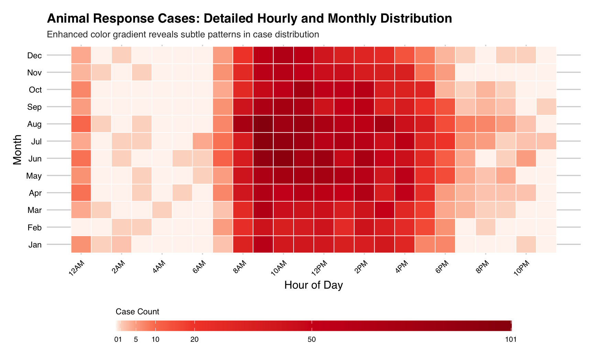

Temporal Pattern
source("data_cleaning.R")## ── Attaching core tidyverse packages ──────────────────────── tidyverse 2.0.0 ──
## ✔ dplyr 1.1.4 ✔ readr 2.1.5
## ✔ forcats 1.0.1 ✔ stringr 1.5.2
## ✔ ggplot2 4.0.0 ✔ tibble 3.3.0
## ✔ lubridate 1.9.4 ✔ tidyr 1.3.1
## ✔ purrr 1.1.0
## ── Conflicts ────────────────────────────────────────── tidyverse_conflicts() ──
## ✖ dplyr::filter() masks stats::filter()
## ✖ dplyr::lag() masks stats::lag()
## ℹ Use the conflicted package (<http://conflicted.r-lib.org/>) to force all conflicts to become errors
##
## Attaching package: 'hms'
##
##
## The following object is masked from 'package:lubridate':
##
## hms
##
##
## Loading required package: viridisLite
##
##
## Attaching package: 'scales'
##
##
## The following object is masked from 'package:viridis':
##
## viridis_pal
##
##
## The following object is masked from 'package:purrr':
##
## discard
##
##
## The following object is masked from 'package:readr':
##
## col_factor
##
##
## Loading required package: Matrix
##
##
## Attaching package: 'Matrix'
##
##
## The following objects are masked from 'package:tidyr':
##
## expand, pack, unpack
##
##
## Loaded glmnet 4.1-10
##
## Rows: 6385 Columns: 22
## ── Column specification ────────────────────────────────────────────────────────
## Delimiter: ","
## chr (15): Date and Time of initial call, Date and time of Ranger response, B...
## dbl (3): Duration of Response, # of Animals, Hours spent monitoring
## lgl (4): PEP Response, Animal Monitored, Police Response, ESU Response
##
## ℹ Use `spec()` to retrieve the full column specification for this data.
## ℹ Specify the column types or set `show_col_types = FALSE` to quiet this message.
## Rows: 2054 Columns: 34
## ── Column specification ────────────────────────────────────────────────────────
## Delimiter: ","
## chr (22): ACQUISITIONDATE, ADDRESS, BOROUGH, CLASS, COUNCILDISTRICT, DEPARTM...
## dbl (1): PRECINCT
## num (7): ACRES, COMMUNITYBOARD, GISOBJID, NYS_ASSEMBLY, NYS_SENATE, OBJECTI...
## lgl (4): PERMIT, PIP_RATABLE, RETIRED, WATERFRONT
##
## ℹ Use `spec()` to retrieve the full column specification for this data.
## ℹ Specify the column types or set `show_col_types = FALSE` to quiet this message.
## Rows: 703 Columns: 4
## ── Column specification ────────────────────────────────────────────────────────
## Delimiter: ","
## chr (3): original_park, matched_park, final_match
## dbl (1): similarity
##
## ℹ Use `spec()` to retrieve the full column specification for this data.
## ℹ Specify the column types or set `show_col_types = FALSE` to quiet this message.Section 1: Monthly Trends Analysis
Monthly Animal Response Trends
This analysis examines seasonal patterns in animal rescue cases to identify how different animal categories respond to environmental changes throughout the year. Understanding these temporal patterns helps predict peak demand periods for wildlife services.
monthly_animal_trends = park_ranger_new |>
mutate(
call_month = month(date_and_time_of_initial_call, label = TRUE, abbr = TRUE)
) |>
group_by(call_month, animal_class_new) |>
summarise(case_count = n(), .groups = "drop") |>
# Ensure all months are represented for each animal class
complete(call_month, animal_class_new, fill = list(case_count = 0))Monthly Animal Response Cases Chart
mon_case_plot = monthly_animal_trends |>
ggplot(aes(x = call_month, y = case_count, group = animal_class_new, color = animal_class_new)) +
geom_line(linewidth = 1.2) +
geom_point(size = 2) +
scale_y_continuous(breaks = pretty_breaks()) +
labs(
title = "Monthly Animal Response Cases by Animal Class (New Classification)",
subtitle = "Urban Park Ranger Animal Condition Response",
x = "Month",
y = "Number of Cases",
color = "Animal Class"
) +
theme_fivethirtyeight() +
theme(
axis.text.x = element_text(angle = 45, hjust = 1),
legend.position = "bottom",
plot.title = element_text(face = "bold", size = 14),
plot.subtitle = element_text(size = 10),
legend.text = element_text(size = 8)
) +
scale_color_viridis_d()
print(mon_case_plot)
Chart Interpretation
This line chart displays the monthly distribution of animal response cases across 7 reclassified animal categories throughout the year.
Key Findings:
Birds and raptors demonstrate a notable increase in cases beginning in February, reaching a peak in June, and declining to their lowest levels by November, possibly reflecting migratory patterns, nesting seasons, and reduced activity during colder months.
Small mammals exhibit three distinct peaks in case numbers during April, August, and October, which may suggest potential associations with breeding cycles, seasonal resource availability, or periodic human-wildlife interactions in urban environments.
Large mammals maintain relatively consistent case numbers between 70 and 80 throughout the year, indicating potentially stable population dynamics or continuous human encounters despite seasonal variations.
Reptiles and amphibians show generally low and stable case numbers with a moderate peak around 100 in June, which might be linked to temperature-dependent activity patterns and increased visibility during warmer conditions.
Marine mammals and other categories remain consistently minimal with case counts in the single digits, possibly due to their limited presence in urban park ecosystems or lower detection rates.
Section 2: Temporal Distribution Analysis
Temporal Distribution of Cases
This heatmap visualization reveals how animal rescue cases distribute across both daily hours and monthly periods, identifying optimal response windows and understanding the interplay between human activity cycles and wildlife behavior.
hourly_monthly_heatmap = park_ranger_new |>
mutate(
call_month = month(date_and_time_of_initial_call, label = TRUE, abbr = TRUE),
call_hour = hour(date_and_time_of_initial_call)
) |>
filter(!is.na(call_month) & !is.na(call_hour)) |>
group_by(call_month, call_hour) |>
summarise(case_count = n(), .groups = "drop") |>
complete(call_month, call_hour, fill = list(case_count = 0))
max_cases = max(hourly_monthly_heatmap$case_count)
color_breaks = c(0, 1, 5, 10, 20, 50, max_cases)
red_palette = colorRampPalette(c("#FFF5F0", "#FEE0D2", "#FCBBA1", "#FC9272", "#FB6A4A", "#EF3B2C", "#CB181D", "#99000D"))(length(color_breaks))Animal Response Cases Heatmap
case_heatmap = hourly_monthly_heatmap |>
ggplot(aes(x = call_hour, y = call_month, fill = case_count)) +
geom_tile(color = "white", linewidth = 0.3) +
scale_fill_gradientn(
name = "Case Count",
colors = red_palette,
values = rescale(color_breaks),
breaks = color_breaks,
guide = guide_colorbar(
barwidth = 30,
barheight = 0.8,
direction = "horizontal",
title.position = "top"
)
) +
scale_x_continuous(
breaks = seq(0, 23, by = 2),
labels = c("12AM", "2AM", "4AM", "6AM", "8AM", "10AM",
"12PM", "2PM", "4PM", "6PM", "8PM", "10PM")
) +
labs(
title = "Animal Response Cases: Detailed Hourly and Monthly Distribution",
subtitle = "Enhanced color gradient reveals subtle patterns in case distribution",
x = "Hour of Day",
y = "Month"
) +
theme_fivethirtyeight() +
theme(
axis.text.x = element_text(angle = 45, hjust = 1, size = 8),
axis.text.y = element_text(size = 9),
plot.title = element_text(face = "bold", size = 14),
plot.subtitle = element_text(size = 10),
legend.position = "bottom",
legend.title = element_text(size = 9),
legend.text = element_text(size = 8)
)
plot(case_heatmap)
Time-Month Heatmap Analysis:
Case distribution primarily concentrates between 8:00 and 18:00, aligning with peak park visitation and diurnal animal activity. Summer exhibits extended evening activity likely due to increased daylight and recreational use, while winter shows contracted midday patterns corresponding to reduced daylight availability. Minimal overnight reporting may reflect limited detection capabilities during low-human-activity periods.
Recommendations Section
Enhanced ranger coverage during summer afternoons could address elevated case frequencies across multiple species. Early spring public education initiatives might mitigate conflicts by raising awareness of seasonal animal behaviors. Rescue organizations should anticipate increased warm-weather intake while utilizing winter for strategic planning. Visitor vigilance during peak seasons and prompt daylight reporting could improve response effectiveness, supplemented by community monitoring programs and coordinated rehabilitation networks.